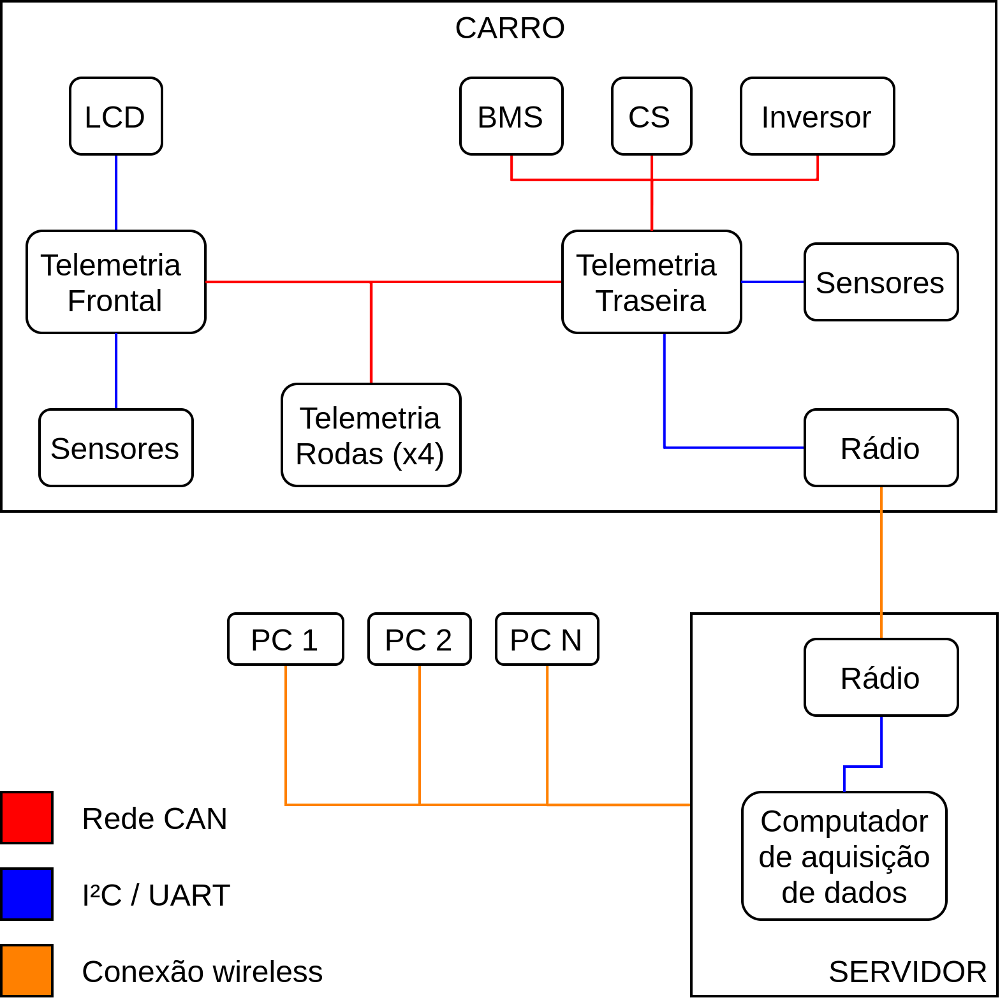

Introdução¶
O sistema de telemetria do CE-21 é projetado para receber, interpretar e visualizar dados diagnósticos do veículo equipe durante os testes e competições. A figura abaixo mostra uma versão simplificada da arquitetura implementada:
{kind=link}
Modos de operação¶
O software é desenvolvido para trabalhar em 3 modos distintos:
- Tempo Real: É utilizado nos testes e competições para receber as informações coletadas dos sensores enquanto o carro está na pista. A transmissão de dados ocorre via rádio e vários dispositivos (clientes) podem se conectar ao servidor ao mesmo tempo, permitindo que vários membros da equipe trabalhem em conjunto monitorando indicadores vitais do veículo. Para possibilitar análises posteriores, esse modo também salva todos os valores recebidos no banco de dados da equipe.
- Simulação: A simulação trabalha com dados coletados e armazenados no banco de dados do servidor, recebidos do rádio (em condições normais) ou importados do cartão de memória embarcado (em caso de perda de sinal de rádio / backup). Esse modo permite que o usuário escolha um intervalo de tempo específico, como por exemplo uma volta na pista, e veja todos os dados relevantes do período em forma de gráficos.
- Espectador: O modo espectador é uma versão especial do modo de tempo real que mostra apenas algumas informações do sistema de telemetria. Pode ser utilizado para permitir que não-membros possam acompanhar dados não-confidenciais do veículo durante um teste através de uma rede WiFi específica.
Dados coletados¶
Para garantir a organização do software, utiliza-se um código universal específico para cada sensor:
- Primeira letra: “S”;
- Segunda letra: “A” para sensores de medição ou “D” para sensores discretos;
- Número: Um número inteiro único que identifica o sensor.
A tabela abaixo lista todos os sensores registrados:
| Código | Nome | Descrição | Subsistema |
|---|---|---|---|
| SD1 | Inertia Switch | Detecção de impacto | Circuito de desligamento |
| SD2 | BOTS (Brake Over Travel Switch) | Curso do pedal de freio | Circuito de desligamento |
| SD3 | Sinal do BMS (Battery Managenent System) | Verificação de erro do BMS | Circuito de desligamento |
| SD4 | Sinal do IMD (Insulation Monitoring Device) | Verificação de erro do IMD | Circuito de desligamento |
| SD5 | Latch do BSPD | Estado do latch do BSPD | Circuito de segurança |
| SD6 | Latch do BMS | Estado do latch do BMS | Circuito de segurança |
| SD7 | Latch do IMD | Estado do latch do IMD | Circuito de segurança |
| SD8 | Reset mestre | Estado do reset mestre | Circuito de segurança |
| SD9 | Reset secundário | Estado do reset secundário | Circuito de segurança |
| SD10 | Estado do circuito de desligamento | Monitora a saída do circuito de desligamento | Circuito de segurança |
| Código | Nome | Descrição | Subsistema |
|---|---|---|---|
| SA1 | Throttle Position Sensor | Porcentagem de atuação do pedal do acelerador | Powertrain |
| SA2 | Throttle Position Sensor | Porcentagem de atuação do pedal do acelerador | Powertrain |
| SA3 | Brake System Encoder | Porcentagem de atuação do pedal de freio | Powertrain |
| SA4 | Sensor reflexivo infravermelho | Rotação da roda frontal direita | Freios |
| SA5 | Sensor reflexivo infravermelho | Rotação da roda frontal esquerda | Freios |
| SA6 | Sensor reflexivo infravermelho | Rotação da roda traseira direita | Freios |
| SA7 | Sensor reflexivo infravermelho | Rotação da roda traseira esquerda | Freios |
| SA8 | Sensor de temperatura infravermelho | Temperatura do centro do disco de freio frontal direito | Freios |
| SA9 | Sensor de temperatura infravermelho | Temperatura da borda do disco de freio frontal direito | Freios |
| SA10 | Sensor de temperatura infravermelho | Temperatura do centro do disco de freio frontal esquerdo | Freios |
| SA11 | Sensor de temperatura infravermelho | Temperatura da borda do disco de freio frontal esquerdo | Freios |
| SA12 | Sensor de temperatura infravermelho | Temperatura do centro do disco de freio traseiro direito | Freios |
| SA13 | Sensor de temperatura infravermelho | Temperatura da borda do disco de freio traseiro direito | Freios |
| SA14 | Sensor de temperatura infravermelho | Temperatura do centro do disco de freio traseiro esquerdo | Freios |
| SA15 | Sensor de temperatura infravermelho | Temperatura da borda do disco de freio traseiro esquerdo | Freios |
| SA16 | Encoder do volante | Ângulo de rotação do volante | Suspensão |
| SA17 | Latitude (GNSS) | Valor da latitude obtida por satélite | Telemetria |
| SA18 | Longitude (GNSS) | Valor da longitude obtida por satélite | Telemetria |
| SA19 | Contagem de satélites (GNSS) | Número de satélites da constelação na linha de visada | Telemetria |
| SA20 | HDOP (GNSS) | Diluição horizontal de precisão da constelação | Telemetria |
| SA21 | Acelerômetro (IMU) | Valor da aceleração no eixo X | Telemetria |
| SA22 | Acelerômetro (IMU) | Valor da aceleração no eixo Y | Telemetria |
| SA23 | Acelerômetro (IMU) | Valor da aceleração no eixo Z | Telemetria |
| SA24 | Giroscópio (IMU) | Valor da velocidade angular em relação ao eixo X | Telemetria |
| SA25 | Giroscópio (IMU) | Valor da velocidade angular em relação ao eixo Y | Telemetria |
| SA26 | Giroscópio (IMU) | Valor da velocidade angular em relação ao eixo Z | Telemetria |
| SA27 | Magnetômetro (IMU) | Valor da intensidade do campo magnético no eixo X | Telemetria |
| SA28 | Magnetômetro (IMU) | Valor da intensidade do campo magnético no eixo Y | Telemetria |
| SA29 | Magnetômetro (IMU) | Valor da intensidade do campo magnético no eixo Z | Telemetria |
| SA30 | Temperatura (IMU) | Temperatura da placa de telemetria traseira | Telemetria |
| SA31 | Corrente (BMS) | Corrente total do acumulador | Powertrain |
| SA32 | Tensão instantânea (BMS) | Tensão atual do acumulador | Powertrain |
| SA33 | Tensão aberta (BMS) | Tensão de circuito aberto do acumulador | Powertrain |
| SA34 | SOC (BMS) | Estado de carga do acumulador | Powertrain |
| SA35 | SSOC (BMS) | Estado de carga simulado do acumulador | Powertrain |
| SA36 | Amp hours (BMS) | Capacidade do acumulador | Powertrain |
| SA37 | Health (BMS) | Estado de saúde do acumulador | Powertrain |
| SA38 | Temperatura alta (BMS) | Temperatura da célula mais quente | Powertrain |
| SA39 | Temperatura baixa (BMS) | Temperatura da célula mais fria | Powertrain |
| SA40 | Temperatura média (BMS) | Temperatura média das células | Powertrain |
| SA41 | Temperatura interna (BMS) | Temperatura interna do BMS | Powertrain |
| SA42 | Tensão alta (BMS) | Maior tensão registrada no acumulador | Powertrain |
| SA43 | Tensão baixa (BMS) | Menor tensão registrada no acumulador | Powertrain |
| SA44 | Tensão média (BMS) | Média das tensões das células | Powertrain |
| SA45 | Resistência alta (BMS) | Maior resistência interna registrada no acumulador | Powertrain |
| SA46 | Resistência baixa (BMS) | Menor resistência interna registrada no acumulador | Powertrain |
| SA47 | Resistência média (BMS) | Média das resistências internas das células | Powertrain |
| SA48 | IDs temperatura (BMS) | Identificadores das células com maior e menor temperatura | Powertrain |
| SA49 | IDs tensão (BMS) | Identificadores das células com maior e menor tensão | Powertrain |
| SA50 | IDs resistência (BMS) | Identificadores das células com maior e menor resistência | Powertrain |
| SA51 | Fan speed (BMS) | Velocidade do ventilador do acumulador | Powertrain |
| SA52 | 12V (BMS) | Tensão de alimentação do BMS | Powertrain |
| SA53 | Isolamento (BMS) | Medida de Shortest wave | Powertrain |
| SA54 | ADC1 (BMS) | Medida do ADC1 | Powertrain |
| SA55 | Tensão GLV | Tensão na bateria de baixa tensão | Telemetria |
| SA56 | RPM (Inversor) | Rotação do motor (P0002) | Powertrain |
| SA57 | Corrente (Inversor) | Corrente do motor (P0003) | Powertrain |
| SA58 | Frequência (Inversor) | Frequência do motor (P0005) | Powertrain |
| SA59 | Estado (Inversor) | Estado do Inversor (P0006) | Powertrain |
| SA60 | Tensão (Inversor) | Tensão de saída do inversor (P0007) | Powertrain |
| SA61 | Velocidade (Inversor) | Velocidade do veículo (P0008) | Powertrain |
| SA62 | Torque (Inversor) | Torque no motor (P0009) | Powertrain |
| SA63 | Temperatura (Inversor) | Temperatura do MOSFET (P0030) | Powertrain |
| SA64 | Temperatura (Inversor) | Temperatura do MOSFET 2 (P0033) | Powertrain |
| SA65 | Temperatura (Inversor) | Temperatura do ar interno (P0034) | Powertrain |
| SA66 | Sobrecarga (Inversor) | Sobrecarga do motor (P0037) | Powertrain |
| SA67 | Alarme (Inversor) | Alarme atual (P0048) | Powertrain |
| SA68 | Falha atual (Inversor) | Número da falha atual (P0049) | Powertrain |
| SA69 | Falha anterior (Inversor) | Última falha registrada (P0050) | Powertrain |
| SA70 | Sensor Hall GLV | Corrente na bateria de baixa | Telemetria |
| SA71 | IMD PWM | Saída PWM do IMD | Circuito de segurança |
| SA71 | IMD PWM | Saída PWM do IMD | Circuito de segurança |
| SA72 | Setpoint do cebolinha | Tensão de comparação do cebolinha | Circuito de segurança |
| SA73 | Setpoint do sensor hall | Tensão de comparação do sensor hall | Circuito de segurança |
| SA74 | Cebolinha | Saída do cebolinha | Circuito de segurança |
| SA75 | Sensor hall | Saída do sensor hall | Circuito de segurança |